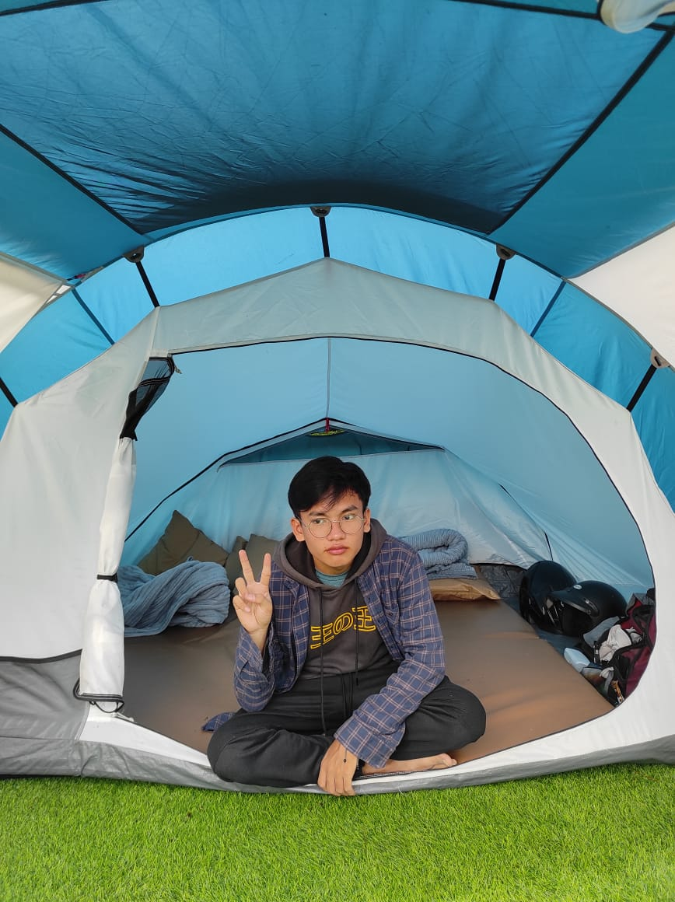

Better
health
days
lives
Diabet Care adalah sebuah sistem aplikasi berbasis website yang dapat digunakan sebagai pendeteksi penyakit diabetes menggunakan Machine Learning
Diabet Care adalah sebuah sistem aplikasi berbasis website yang dapat digunakan sebagai pendeteksi penyakit diabetes menggunakan Machine Learning
Penyakit diabetes adalah masalah kesehatan yang sering terjadi di masyarakat Indonesia. Jutaan orang yang terkena penyakit diabetes khawatir akan komplikasi yang ditimbulkan dari penyakit ini. Menggunakan teknologi Machine Learning, kami dapat memberikan solusi pencegahan awal dalamm mendeteksi penyakit diabetes yang mungkin terjadi pada Anda!
Kami menggunakan teknologi Machine Learning untuk mengembangkan sistem pendeteksi penyakit diabetes yang handal dan akurat. Berdasarkan data yang dilatih, dapat ditemukan pola-pola yang terkait dengan diabetes sehingga bisa mengidentifikasi faktor risiko serta gejala diabetes.
95%
Accuration


Setelah perumusan masalah ditemukan, kami melakukan tahap pencarian dataset penyakit diabetes. Kami menggunakan dataset publik dari Kaggle.
Kemudian kami melakukan tahap pra-pemrosesan data yang meliputi mengecekan data yang kosong, mengubah data kategorikal menjadi numerik, dan melakukan train-test-split.
Selanjutnya kami mengembangkan model machine learning dengan arsitektur model sebuah input layer, 3 dense layer, 2 dropout layer, dan 1 output layer.
Model machine learning kami menggunakan optimizer Adam, binary crossentropy loss function, dan metrik akurasi. Hasil evaluasi akuasi model mencapai 94.23%.
Setelah model machine learning optimal, kami lanjut ke tahap deployment model ke dalam aplikasi website ini agar dapat terintegrasi dan digunakan masyarakat luas.
Melakukan pengujian aplikasi website dan pengembangan serta pemeliharaan sistem lebih lanjut.
General Manager
Mahasiswa S1 Ilmu Komputer 2020, Fakultas Ilmu Komputer dan Teknologi Informasi, Universitas Sumatera Utara.
Machine Learning Engineer
Mahasiswa S1 Ilmu Komputer 2020, Fakultas Ilmu Komputer dan Teknologi Informasi, Universitas Sumatera Utara.
Coba deteksi penyakit diabetes Anda sekarang juga dengan sistem yang didukung oleh teknologi machine learning kami! Anda hanya perlu memasukkan usia, jenis kelamin, dan gejala-gejala penyakit diabetes Anda seperti sering buang air kecil, sering haus, penurunan berat badan, rasa lapar yang berlebihan, otot kaku, obesitas, dan lain-lain.